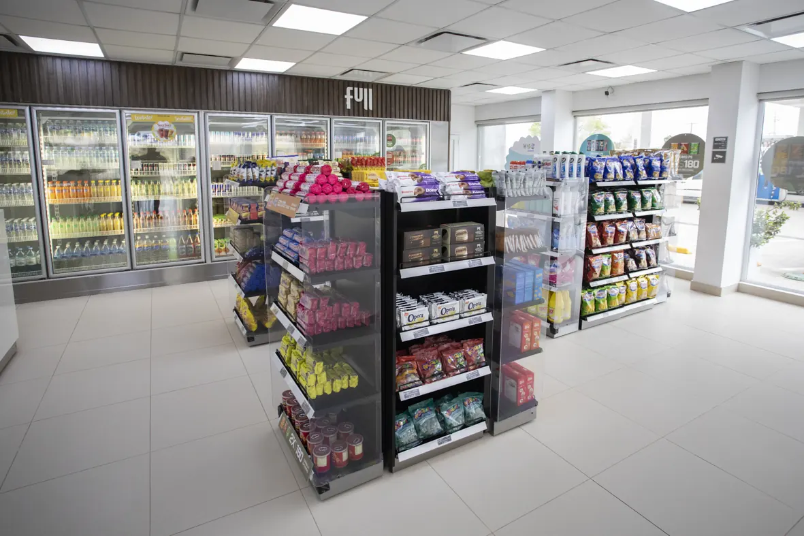
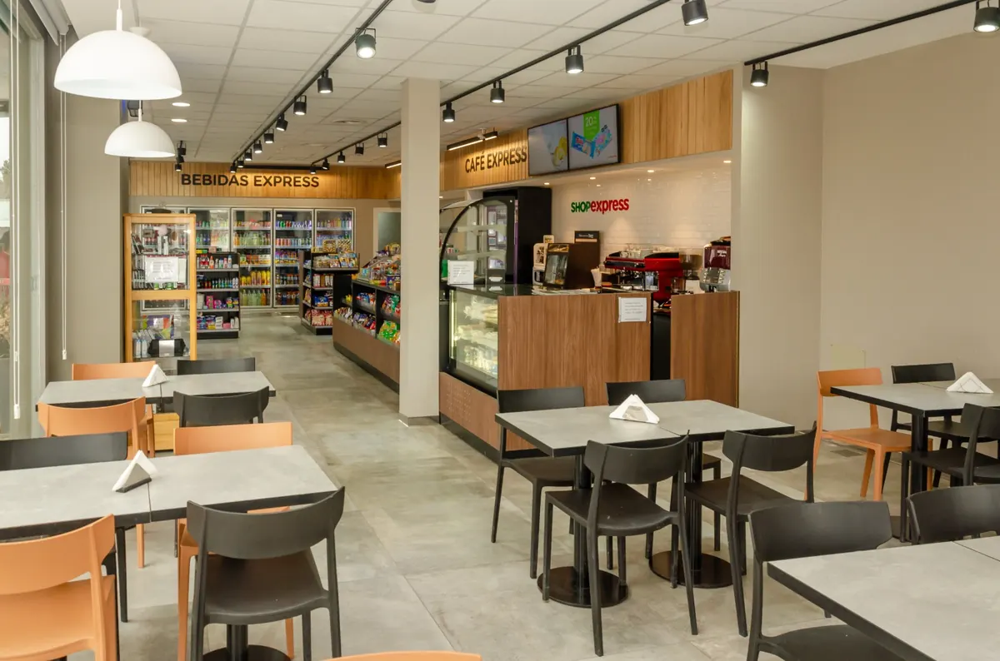
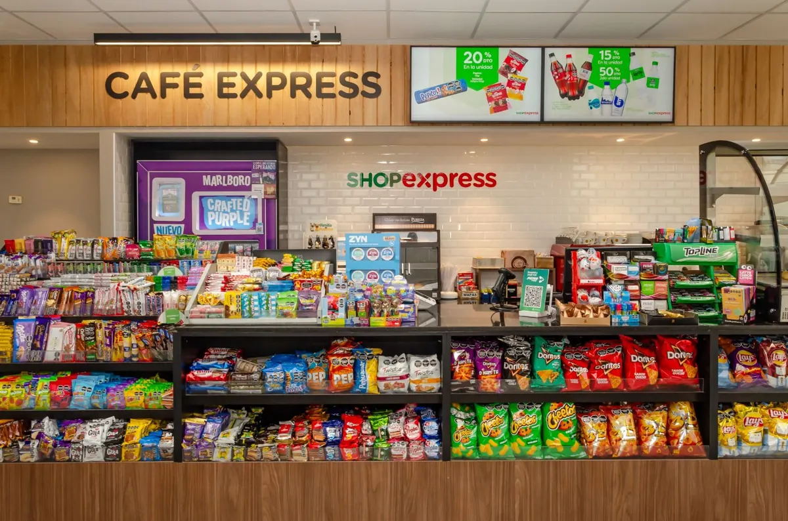
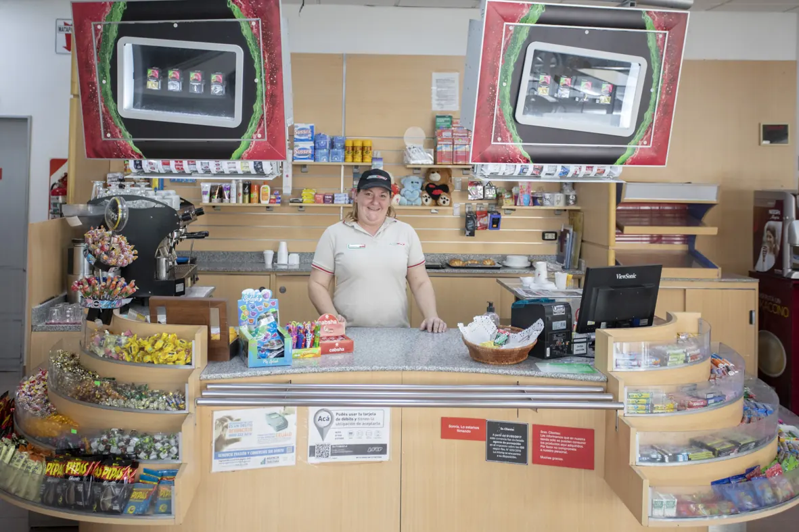
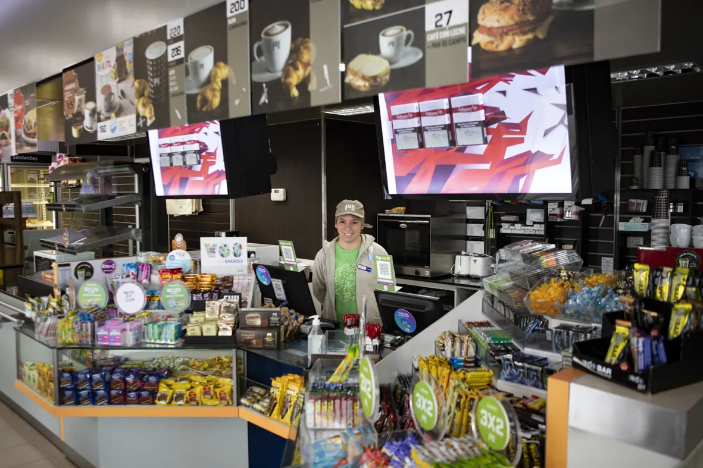
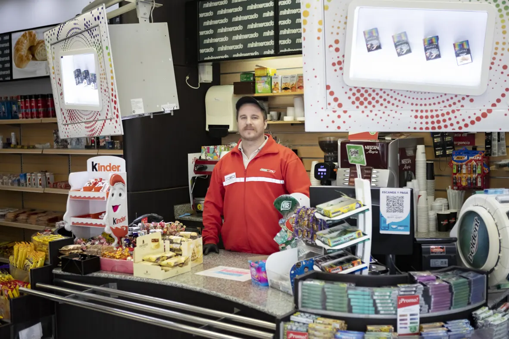

Hacé una pausa. Nosotros nos ocupamos del resto.
Cafeterías, parrilla, comidas al plato y minimercados atendidos por nuestro propio equipo en cada estación.
Parrilla en la ruta
En nuestra estación de Campo Grande te esperamos con parrilla, comidas calientes, platos del día, viandas y bebidas.
- Parrilla y platos del día.
- Cafetería, minishop, regalería y marroquinería.
- Baños y duchas las 24 h, báscula para camiones.

Full: café y comida a toda hora
En nuestras tiendas Full de Añelo encontrás cafetería, hamburguesas, platos elaborados y comidas saludables, las 24 horas. En Centenario, café, facturas, comida caliente, sándwiches, bebidas frescas y helados.


Shop Express: café y algo rico al paso
En nuestra estación de Cipolletti te esperamos con Café Express, Bebidas Express, minimercado, comida al plato y viandas, en un salón cómodo y climatizado.
- Cafetería, comida al plato y viandas.
- Minimercado, agua para el termo, leña, carbón y hielo.
- WiFi y aire acondicionado.


Para el viaje, el trabajo o el mate
Café, comida al plato, viandas, agua caliente para el termo y productos esenciales en nuestras estaciones Puma.

Cafetería
Café, facturas y algo rico al paso.

Minimercado
Bebidas, snacks y productos esenciales.

Atención propia
